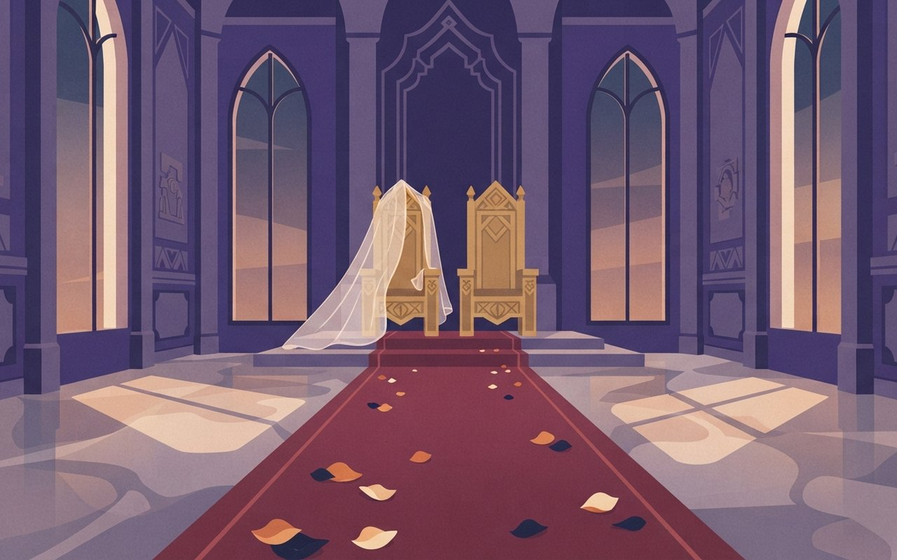
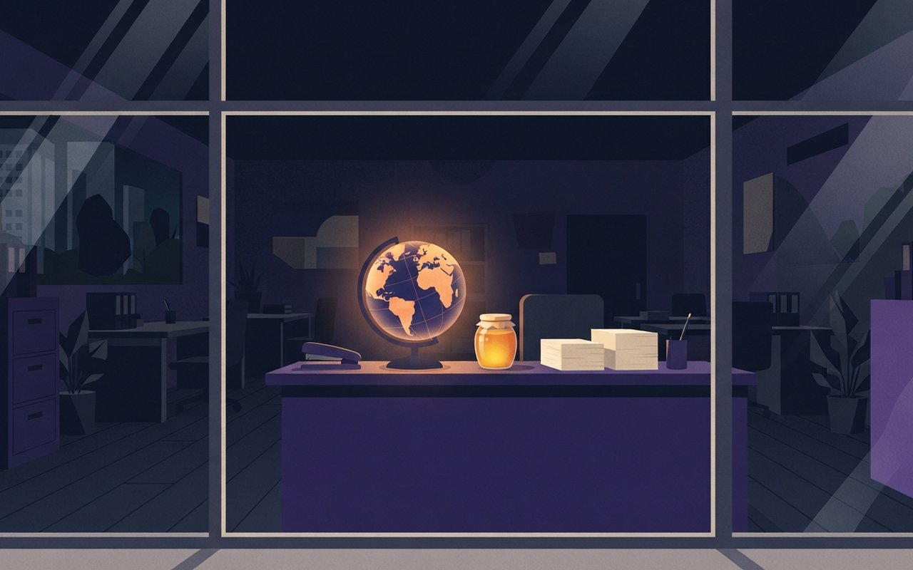
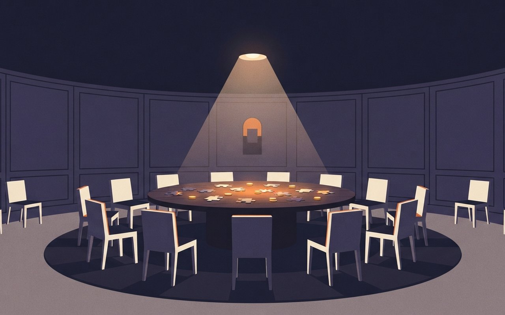
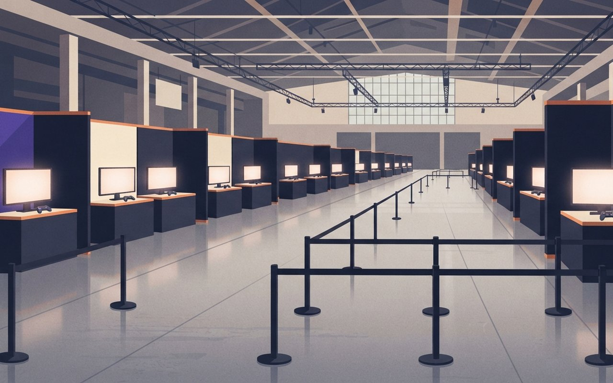

2026년 11월 11일 수요일 · OTT·게임·웹툰 브리프6 Picks · 시리즈 4 · 게임 2
디즈니플러스 〈재혼 황후〉 5·6화가 오늘 오후 5시에 올라옵니다. 넷플릭스 〈꿀알바〉는 공개 2주 차에 비영어 쇼 부문 세계 1위가 됐고, 〈데블스 플랜〉 시즌 3이 어제 시작했습니다. 게임에서는 〈GTA 6〉 사전 다운로드가 이틀 당겨져 이미 열렸고, 지스타는 19일 부산에서 개막합니다. 지난 호에 〈재혼 황후〉 공개일을 11월 4일로 적었는데 실제로는 3일로 당겨져 공개됐습니다. 바로잡습니다.
🎧 듣기 · 약 2분
🎧 낭독 원고 보기
11월 11일 수요일, OTT·게임·웹툰 브리프입니다.
오늘 오후 5시, 재혼 황후 5화와 6화가 디즈니플러스에 올라옵니다. 10부작 가운데 4화까지 먼저 공개됐고, 매주 수요일 두 편씩 나와 25일에 끝납니다. 굿데이터 펀덱스 11월 1주 차 화제성 조사에서는 점유율 10.43퍼센트로 1위였습니다. 지난 호에 공개일을 4일로 전해 드렸는데, 실제로는 3일로 당겨졌습니다.
넷플릭스 꿀알바는 공개 2주 차에 비영어 쇼 부문 세계 1위에 올랐습니다. 11월 2일부터 8일까지 시청수는 870만이고, 22개 나라에서 1위였습니다. 첫 주에는 4위였습니다.
두뇌 서바이벌 데블스 플랜 시즌 3, 데드 어게인은 어제 넷플릭스에서 1회부터 5회까지 공개됐습니다. 역대 최다인 16명이 나오는 14부작이고, 3주에 걸쳐 매주 화요일에 이어집니다.
GTA 6 사전 다운로드는 이틀 당겨져 10일에 열렸습니다. 필요한 용량은 최대 212기가바이트입니다. 다운로드 코드가 든 박스판은 내일 12일부터 팔고, 출시일은 19일 그대로입니다.
지스타는 19일부터 22일까지 부산 벡스코에서 열립니다. 입장권은 일반 18,000원이고, 현장 판매 없이 온라인 사전 예매로만 팝니다. 토요일 1부는 이미 매진입니다.
넷플릭스 푸른길은 20일 오후 5시에 8부작이 한꺼번에 공개됩니다. 손석구와 나가야마 에이타가 서울과 도쿄의 형사로 나오고, 청소년 관람불가입니다.
지금까지 11월 11일 OTT·게임·웹툰 브리프였습니다. 공개일과 시각, 가격은 바뀔 수 있으니 각 플랫폼에서 확인해 주세요. 좋은 하루 보내세요.
Series — 오늘 새 회차
婚
디즈니+ 수요일
〈재혼 황후〉 오늘 오후 5시 5·6화 — 첫 주 화제성 1위, 25일 완결
디즈니플러스 〈재혼 황후〉 5·6화가 오늘 11월 11일 오후 5시(한국시간)에 공개된다. 총 10부작으로 1~4화가 먼저 나왔고, 이후 매주 수요일 2회씩 올라온다(MTN 11/5). 18일 7·8화, 25일 9·10화로 끝난다. 미국 서머타임이 끝나 공개 시각이 한 시간 늦어졌다(이투데이).
굿데이터코퍼레이션 펀덱스의 11월 1주 차 TV-OTT 통합 화제성 조사에서 점유율 10.43%로 1위에 올랐다. 2위는 tvN 〈100일의 거짓말〉 9.04%, 3위는 SBS 〈닥터X〉 6.00%다(텐아시아 11/10). 미술·의상을 두고는 어색하다는 평가와 묘하게 중독성 있다는 반응이 엇갈렸다.
바로잡습니다. 지난 호(11/4)에 공개일을 11월 4일로 적었으나, 공개는 3일로 하루 당겨졌다(텐아시아 11/3 제작발표회 기사).
오늘11월 11일(수) 오후 5시 5·6화 ⚠ 변동 가능
남은 일정11/18(수) 7·8화 · 11/25(수) 9·10화(최종)
회차10부작 — 1~4화 먼저 공개, 이후 매주 수요일 2회씩
화제성펀덱스 11월 1주 차 TV-OTT 통합 1위 10.43% · 2위 100일의 거짓말 9.04% · 3위 닥터X 6.00%
출연신민아(나비에) · 주지훈(소비에슈) · 이종석(하인리) · 이세영(라스타)
📺 알고 보면 달라지는 것
주간 공개라서 지금 시작해도 6화까지 한 번에 볼 수 있고, 2주 뒤인 25일에 끝난다. 화제성 순위는 뉴스·커뮤니티·영상 반응을 모은 조사라 시청 시간 순위와는 다른 지표다.
재혼 황후 5·6화가 11일 오후 5시 디즈니플러스에 올라와요. 매주 수요일 2회씩, 25일에 끝나요. 펀덱스 화제성은 10.43%로 1위예요.
An ornate empty throne room at dusk with two golden thrones side by side, one draped with a white veil, rose petals scattered on a long red carpet, tall arched windows, no people, no text

Series — 넷플릭스 순위
蜜
넷플릭스 톱10
〈꿀알바〉 공개 2주 차에 넷플릭스 비영어 쇼 세계 1위 — 시청수 870만, 22개국 1위
넷플릭스가 11일 공개한 주간 톱10(11월 2~8일)에서 〈꿀알바〉가 비영어 쇼 부문 1위에 올랐다. 시청수는 870만이다. 시청수는 시청 시간을 작품의 총 러닝타임으로 나눈 값이다(이데일리 11/11).
22개국에서 1위, 76개국에서 톱10에 들었다. 공개 사흘만 집계된 첫 주에는 비영어 쇼 4위(이투데이 11/11), 51개국 톱10이었다(위키트리 11/4). 같은 주 SBS 〈닥터X: 하얀 마피아의 시대〉는 비영어 쇼 4위(370만)였다.
10월 30일 공개작으로, 시급 50배를 내건 인력사무소를 배경으로 한 생계형 호러다. 이재욱·고민시·김민하·이희준이 출연하고 김다민이 연출했다.
순위비영어 쇼 1위 (11월 2~8일, 넷플릭스 집계)
시청수870만 — 시청 시간 ÷ 총 러닝타임
나라22개국 1위 · 76개국 톱10
첫 주비영어 쇼 4위 · 51개국 톱10 (공개 3일 집계)
같은 주닥터X 비영어 쇼 4위 · 370만
📺 알고 보면 달라지는 것
첫 주는 사흘치만 집계돼 4위였고, 일주일을 온전히 채운 둘째 주에 1위가 됐다. 전편이 이미 올라와 있어 몰아볼 수 있다. 1위를 한 나라 이름은 매체마다 다르게 소개돼 싣지 않았다.
넷플릭스 꿀알바가 11월 2~8일 비영어 쇼 1위예요. 시청수 870만, 22개국에서 1위를 했어요. 사흘만 집계된 첫 주에는 4위였어요.
첫 주 4위|2주 차 1위|11월 2~8일
870만|주간 시청수
22개국|1위를 한 나라
A dim employment office at night seen from outside through a window, a world globe glowing on the front desk beside a jar of golden honey, stacks of blank papers, no people, no logos, no text

Series — 이번 주 시작
謀
두뇌 서바이벌
〈데블스 플랜: 데드 어게인〉 10일 공개 — 역대 최다 16명, 14부작을 3주에 걸쳐
넷플릭스 두뇌 서바이벌 〈데블스 플랜〉의 세 번째 시즌 〈데블스 플랜: 데드 어게인〉이 11월 10일(화) 오후 5시 1~5회를 먼저 공개했다. 총 14부작이며 3주에 걸쳐 매주 화요일에 이어진다. 연출은 정종연 PD다(국제뉴스 11/10).
출연자는 역대 최다인 16명이다. 장동민·홍진호·오현민·존박 등이 출연하고, 시즌 1 우승자 하석진과 시즌 2 우승자 정현규가 재출전한다. 신동·재재·넉살·스텔라장 등이 새로 도전한다. 이번 시즌은 탈락자를 피스 수가 아니라 게임 결과로만 정하도록 규칙을 바꿨다(위키트리).
서바이벌은 탈락자가 곧 스포일러다. 주간 공개라 다음 회차가 올라오는 화요일 전후로 SNS 노출을 조심하는 편이 낫다. 둘째·셋째 주에 몇 회씩 나오는지는 기사에 없다.
국제뉴스 — 공개 시각·회차·출연(11/10)위키트리 — 출연자 16명·규칙 변화공개일·시각·1~5회·14부작·3주 공개·연출은 국제뉴스 11/10과 위키트리 일치, 16명 명단·규칙 변화는 위키트리 · 주차별 회차 배분과 최종화 날짜는 기사에 없어 적지 않았다 · 'SNS 노출 주의'는 편집자 일반 조언 (확인 2026-11-11)
데블스 플랜 시즌 3 넷플릭스에서 시작
데블스 플랜 데드 어게인이 10일 넷플릭스에서 1~5회를 공개했어요. 장동민·홍진호와 역대 우승자 하석진·정현규가 나와요. 매주 화요일에 이어져요.
16명|역대 최다 출연자
14부작|3주에 걸쳐 공개
A dark circular game room with a ring of many empty chairs around a round table, scattered puzzle pieces and small golden tokens glowing under a single overhead spotlight, no people, no logos, no text

Game — 19일 출시 준비
載
콘솔 다운로드
〈GTA 6〉 사전 다운로드 이틀 당겨 시작 — 최대 212GB, 박스판은 12일부터
락스타 게임즈가 〈GTA 6〉 사전 다운로드를 애초 안내한 12일에서 10일로 이틀 당겼다(인벤 11/4). PS5는 각 지역 현지 시각 10일 0시, Xbox 시리즈 X|S는 한국 시각 10일 오전 9시에 열렸다. 필요한 저장 공간은 기기에 따라 최대 212GB다. 출시일은 11월 19일 그대로다.
다운로드 코드가 담긴 '코드 인 박스' 버전은 12일부터 소매점에서 판다(지디넷코리아 11/4·인벤 11/4). 자동으로 내려받으려면 PS5는 자동 다운로드를 켜고 전원을 켜 두거나 휴식 모드로, Xbox는 자동 업데이트를 켜고 전원을 켜 두거나 절전 모드로 둬야 한다.
소니와 마이크로소프트는 각각 자사 스토어 사상 가장 많이 사전 예약된 게임이라고 밝혔다. 수량은 공개하지 않았다(지디넷코리아 11/11).
사전 다운로드10일 시작(12일에서 당김) — PS5 현지 0시 · Xbox 한국 시각 오전 9시
용량최대 212GB (기기에 따라 다름)
박스판코드 인 박스(다운로드 코드) 11.12(목)부터 소매점 판매
출시11월 19일(목) · PS5 · Xbox 시리즈 X|S ⚠ 변동 가능
사전 예약소니·MS 각각 "스토어 사상 최다" — 수량 비공개
📺 알고 보면 달라지는 것
박스판에도 다운로드 코드가 들어 있어 결국 내려받아야 한다. 출시일에 바로 하려면 그 전에 212GB를 비우고 자동 다운로드 설정을 확인해 둔다. 출처 기사에는 출시 시각이 없다.
GTA 6 사전 다운로드가 10일에 시작됐어요. 용량은 최대 212GB예요. 코드가 든 박스판은 12일부터 팔고, 출시는 19일 그대로예요.
비워 둘 용량(GB)|212|박스판 판매 시작|12일
A plain gamepad and a sealed cardboard box on a low table in a dim living room, a large window behind showing a warm sunset over a palm-lined coast, a download progress light glowing softly, no people, no logos, no text
Game — 다음 주 행사
展
부산 벡스코
지스타 2026, 19~22일 부산 벡스코 — 입장권은 온라인 예매만, 토요일 1부 매진
국제게임전시회 지스타 2026이 11월 19일(목)~22일(일) 부산 벡스코에서 열린다(전자신문 9/29). 입장권은 일반 18,000원, 청소년 8,000원이고 온라인 사전 예매로만 판다(고객센터 티켓링크). 현장 판매는 없고, 관람일 전날 24시까지 살 수 있다. 한 사람이 하루에 2장까지다(지스타 공식 안내).
11일 오전 공식 안내 페이지 기준으로 21일(토) 1부 입장권은 매진이다. 제1전시장에는 크래프톤·호요버스·웹젠 등이 100부스 이상 규모로 나오고, 올해 처음 여는 제2전시장 '글로벌 게임 쇼케이스'에는 세가·코에이 테크모·넷이즈·CD 프로젝트 레드가 참가한다. 넥슨·엔씨소프트·넷마블은 출품하지 않는다(비즈워치 11/6).
기간·장소11월 19일(목)~22일(일) · 부산 벡스코
입장권일반 18,000원 · 청소년 8,000원 ⚠ 변동 가능
예매온라인 사전 예매만(현장 판매 없음) · 관람일 전날 24시까지 · 1인 1일 2매
매진21일(토) 1부 (11일 오전 공식 안내 기준)
참가크래프톤 · 호요버스 · 웹젠 · 세가 · 코에이 테크모 · 넷이즈 · CD 프로젝트 레드 / 불참 넥슨 · 엔씨소프트 · 넷마블
📺 알고 보면 달라지는 것
벡스코에 가서 표를 살 수는 없다. 갈 날을 정했다면 전날 자정 전에 예매를 끝내야 하고, 토요일은 2부만 남았다. 국내 대형 3사가 빠진 자리에 세가·코에이 테크모·넷이즈 같은 해외 게임사가 들어온다.
지스타 — 입장권 공식 안내전자신문 — 일정·참가사(9/29)비즈워치 — 대형 3사 불참(11/6)가격·예매처·현장 판매 없음·전날 24시·1인 2매·토요일 1부 매진은 지스타 공식 입장권 안내 페이지(11일 오전 확인), 일정·제1전시장 대형 부스·글로벌 게임 쇼케이스 참가사는 전자신문 9/29, 넥슨·엔씨소프트·넷마블 불참은 비즈워치 · 20~22일 개장 시각과 1·2부 시간대는 확인하지 못해 적지 않았다 (확인 2026-11-11)
지스타 19일 개막 현장 판매 없어요
지스타가 19~22일 부산 벡스코에서 열려요. 입장권은 온라인 사전 예매만 되고 관람일 전날 24시까지 사야 해요. 토요일 1부는 매진이에요.
부산
11/19~11/22
18,000원|일반 입장권
온라인 예매만 / 전날 24시까지
A vast empty convention hall before opening, rows of dark exhibition booths with glowing blank monitors and game controllers on demo stands, queue barriers in the foreground, no people, no logos, no text

Series — 다음 주 공개
路
한일 형사물
〈푸른길〉 20일 오후 5시 8부작 전편 공개 — 손석구·나가야마 에이타, 서울과 도쿄의 형사
넷플릭스 시리즈 〈푸른길〉이 11월 20일(금) 오후 5시에 8부작 전편을 한꺼번에 공개한다. 청소년 관람불가 등급이다(위키트리 11/6). 손석구가 서울경찰청 형사 김석, 나가야마 에이타가 도쿄 경시청 형사 이노세 히로시를 맡았다.
김신록이 재일교포 사업가 리윤옥, 정재영이 일본 암흑가의 거물 서현태로 나오고, 최성은은 원작에 없는 정부 요원 윤수경을 연기한다. 연출은 〈D.P.〉의 한준희 감독이다. 원작은 에도가와 케이시가 글을 쓰고 권가야가 그린 한일 합작 만화다. 배경은 2002년 월드컵 시기이며 메인 예고편과 포스터가 공개됐다.
공개11월 20일(금) 오후 5시 · 넷플릭스 ⚠ 변동 가능
회차8부작 전편 동시 공개 · 청소년 관람불가
출연손석구(김석) · 나가야마 에이타(이노세 히로시) · 김신록 · 최성은 · 정재영
제작연출 한준희 · 원작 에도가와 케이시(글)·권가야(그림)
📺 알고 보면 달라지는 것
10월 28일 호에서는 기사 한 건만 있던 소식인데, 공개 시각과 등급, 배역이 확정됐다. 전편 공개라 주말에 몰아볼 수 있지만 청소년 관람불가라 가족과 함께 보기는 어렵다.
위키트리 — 공개 시각·배역·원작(11/6)위키트리 — 메인 예고편·배경공개일·시각·8부작 전편·등급·배역·연출·원작은 위키트리 11/6, 메인 예고편·포스터 공개와 2002년 월드컵 배경은 위키트리 후속 기사 · 원작 형태(만화)는 11/6 기사 기준 · 두 기사 모두 위키트리라 다른 매체 교차 확인은 못 했다 (확인 2026-11-11)
푸른길, 20일 공개 손석구·에이타
넷플릭스 푸른길이 20일 오후 5시에 전편 공개돼요. 손석구가 서울, 나가야마 에이타가 도쿄의 형사로 나와요. 청소년 관람불가예요.
A long empty coastal highway at blue hour stretching between two distant city skylines across the sea, wet asphalt reflecting streetlights, an old sedan parked on the shoulder, no people, no logos, no text